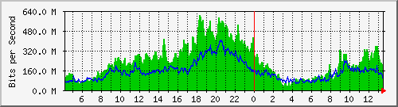
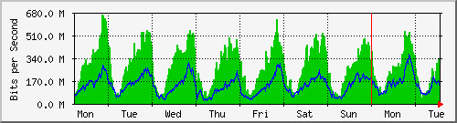
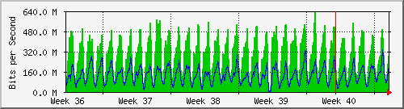
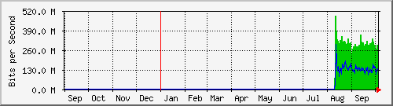

Traffic Analysis for Gi0/1 -- data.sky
| System: | data.sky in stoyka |
| Maintainer: | falcon@skyinet.org |
| Description: | GigabitEthernet0/1 |
| ifType: | ethernetCsmacd (6) |
| ifName: | Gi0/1 |
| Max Speed: | 125.0 MBytes/s |
| Ip: | 91.223.48.250 (No DNS name) |
The statistics were last updated Tuesday, 6 October 2015 at 13:30,
at which time 'data.sky' had been up for 12 days, 11:51:30.
`Daily' Graph (5 Minute Average)

|
Max |
Average |
Current |
| In |
603.4 Mb/s (60.3%) |
235.9 Mb/s (23.6%) |
95.6 Mb/s (9.6%) |
| Out |
402.6 Mb/s (40.3%) |
153.3 Mb/s (15.3%) |
66.1 Mb/s (6.6%) |
`Weekly' Graph (30 Minute Average)

|
Max |
Average |
Current |
| In |
660.2 Mb/s (66.0%) |
277.4 Mb/s (27.7%) |
208.6 Mb/s (20.9%) |
| Out |
363.1 Mb/s (36.3%) |
135.0 Mb/s (13.5%) |
119.0 Mb/s (11.9%) |
`Monthly' Graph (2 Hour Average)

|
Max |
Average |
Current |
| In |
630.7 Mb/s (63.1%) |
289.8 Mb/s (29.0%) |
284.7 Mb/s (28.5%) |
| Out |
331.2 Mb/s (33.1%) |
129.8 Mb/s (13.0%) |
157.8 Mb/s (15.8%) |
`Yearly' Graph (1 Day Average)

|
Max |
Average |
Current |
| In |
487.9 Mb/s (48.8%) |
296.7 Mb/s (29.7%) |
259.0 Mb/s (25.9%) |
| Out |
291.6 Mb/s (29.2%) |
134.6 Mb/s (13.5%) |
133.6 Mb/s (13.4%) |
| GREEN ### |
Incoming Traffic in Bits per Second |
| BLUE ### |
Outgoing Traffic in Bits per Second |